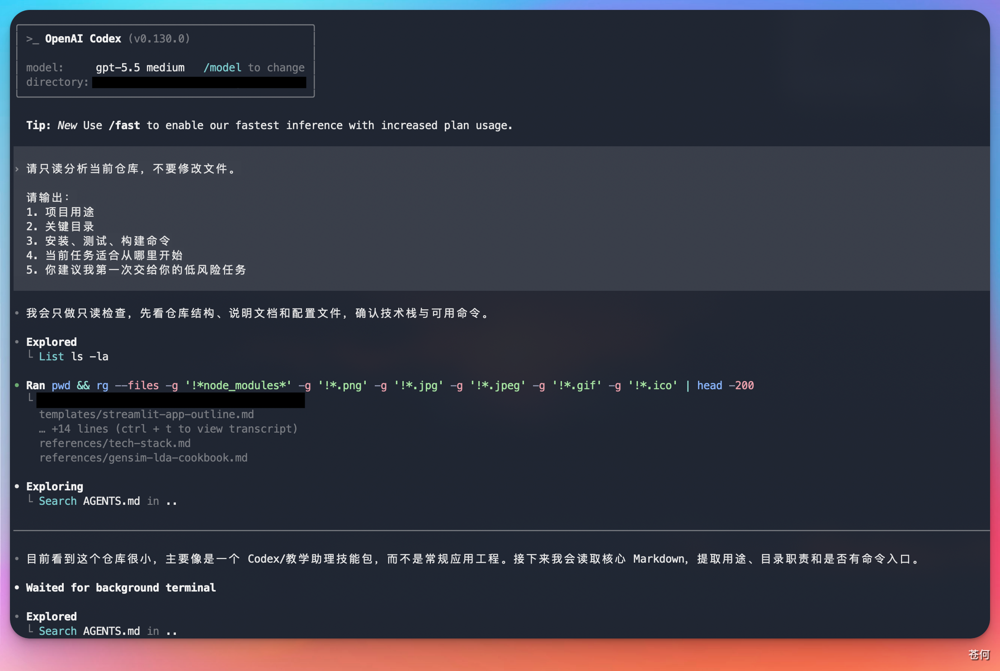
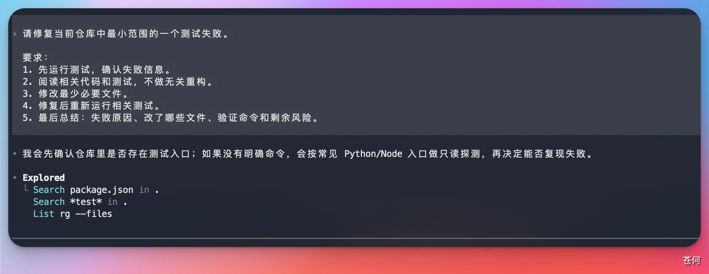
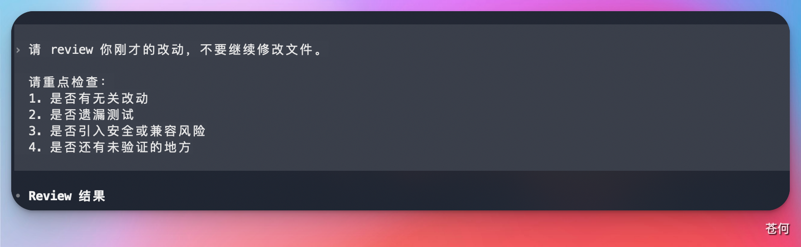

第一次实战不要选择“重构整个项目”。选择一个小、可验证、失败也容易回滚的任务，先建立你和 Codex 的协作节奏。
选择第一个任务#
适合新手：
- 修复一个文案错别字。
- 给一个纯函数补测试。
- 更新 README 里的过期命令。
- 解释一个小模块，并补充必要注释。
- 修复一个已经有失败测试覆盖的 bug。
- 为文档站补一段截图占位说明。
暂时避开：
- 大规模架构重构。
- 跨多个服务的迁移。
- 没有测试的核心业务逻辑改动。
- 涉及生产凭据、账单、权限和删除数据的操作。
- 需要同时修改十几个文件的需求。
第一步：只读建图#
先让 Codex 理解仓库：
请只读分析当前仓库，不要修改文件。
请输出：
1. 项目用途
2. 关键目录
3. 安装、测试、构建命令
4. 当前任务适合从哪里开始
5. 你建议我第一次交给你的低风险任务
第二步：给出小任务#
推荐复制这个模板：
请修复当前仓库中最小范围的一个测试失败。
要求：
1. 先运行测试，确认失败信息。
2. 阅读相关代码和测试，不做无关重构。
3. 修改最少必要文件。
4. 修复后重新运行相关测试。
5. 最后总结：失败原因、改了哪些文件、验证命令和剩余风险。如果任务是文档：
请更新 [文档文件] 中关于 [主题] 的说明。
要求：
1. 先读取相关官方资料和现有文档结构。
2. 保持中文教程风格，避免整段翻译官方原文。
3. 涉及操作步骤时添加截图占位。
4. 修改后运行文档站构建。
5. 最后列出来源链接和需要人工补图的位置。
第三步：观察过程#
重点观察五件事：
| 观察点 | 说明 |
|---|---|
| 是否先读上下文 | 好结果通常来自充分阅读相关文件 |
| 是否控制范围 | 第一次任务不追求顺手重构 |
| 是否解释命令 | 命令执行前应说明目的 |
| 是否运行验证 | 修改完成后要跑相关测试或构建 |
| 是否说明风险 | 没能验证的部分要如实记录 |
第四步：检查 diff#
完成后自己再看一遍：
git diff可以让 Codex 自查：
请 review 你刚才的改动，不要继续修改文件。
请重点检查：
1. 是否有无关改动
2. 是否遗漏测试
3. 是否引入安全或兼容风险
4. 是否还有未验证的地方
第五步：提交前记录#
提交前让 Codex 给出一段摘要：
请用提交前摘要格式输出：
- 改动目标
- 修改文件
- 验证命令
- 验证结果
- 剩余风险
- 建议 commit message如果结果满意，再提交：
git add .
git commit -m "fix: resolve failing test"第一次失败怎么办#
| 失败现象 | 处理方式 |
|---|---|
| 改动太大 | 让 Codex 停下，只保留最小修复思路 |
| 测试跑不起来 | 先让它解释环境缺口和命令来源 |
| 方向不对 | 回到只读分析，让它列出文件依据 |
| 输出太泛 | 要求按文件、命令、风险分段输出 |
| 误改无关文件 | 用 git diff 确认，再手动决定保留或丢弃 |
完成标准#
第一次实战完成后，你应该拿到：
- 一个很小的 diff。
- 一条可复现的验证命令。
- 一段清楚的改动摘要。
- 一个可复用的任务模板。
- 对 Codex 权限和审批的初步理解。
下一步#
下一步：CLI 选项与命令。